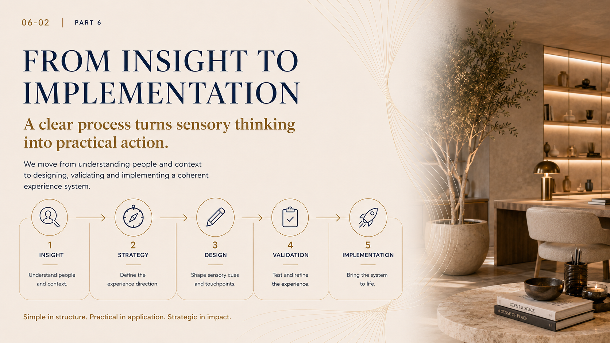
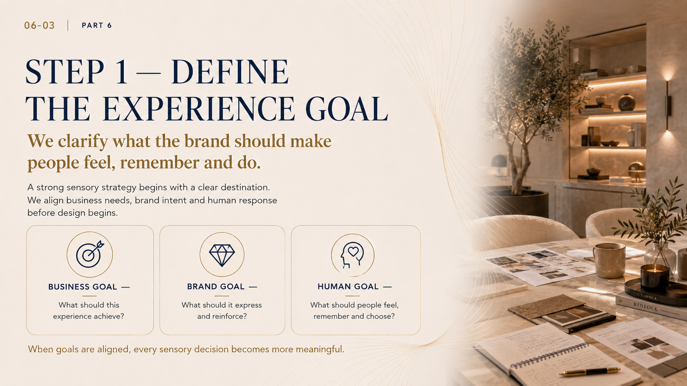
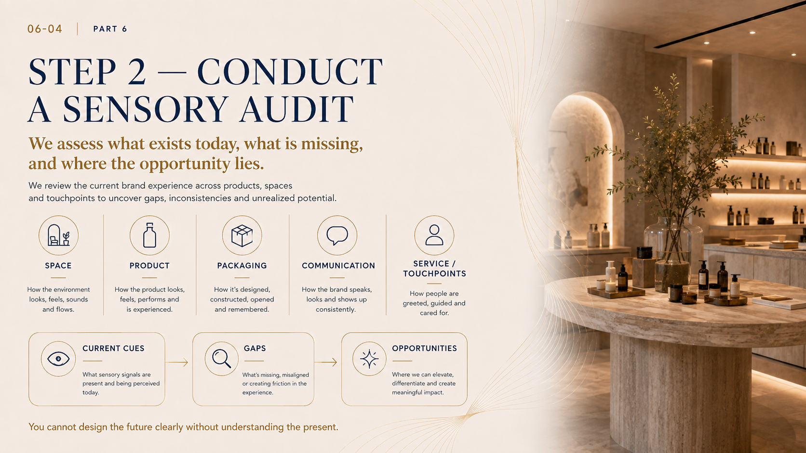
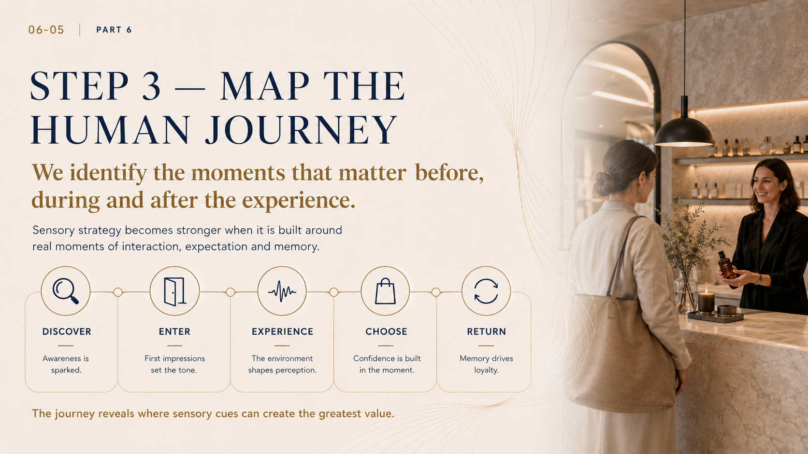
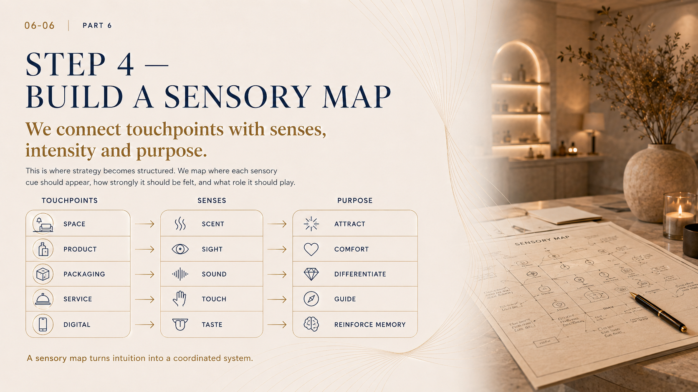
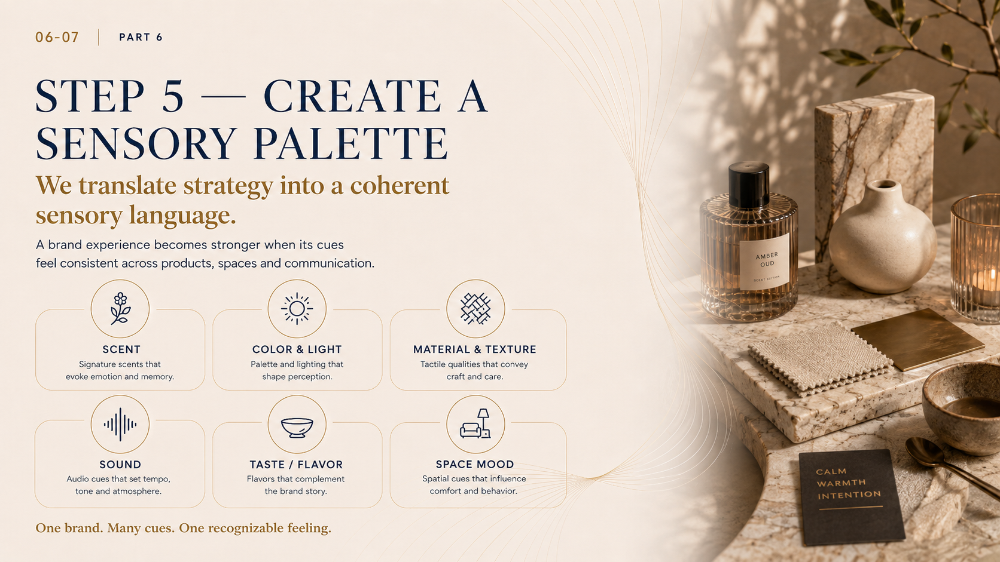
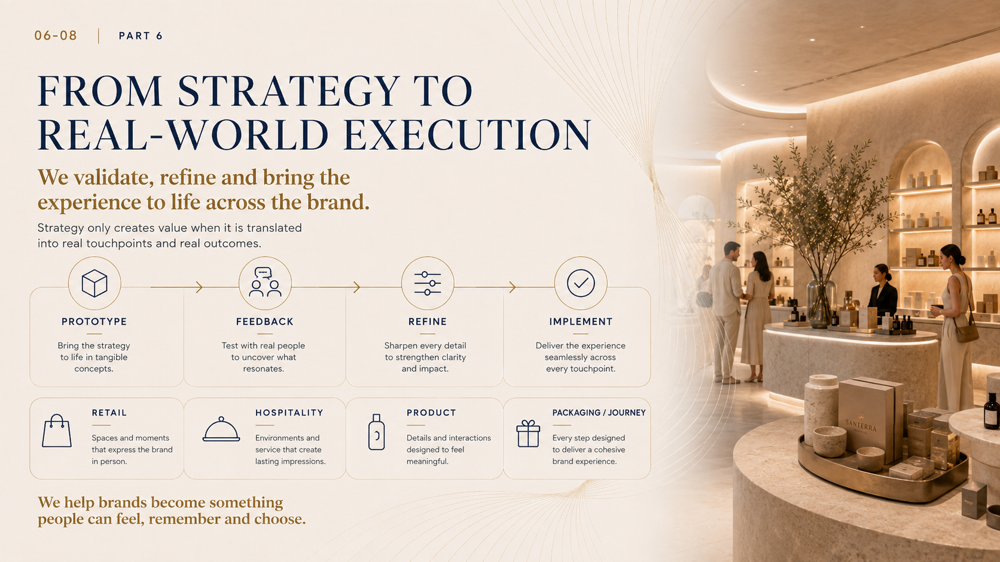

How A&S builds a sensory strategy
From insight to implementation.
A clear process turns sensory thinking into practical action.
We move from understanding people and context to designing, validating and implementing a coherent experience system.
-
Insight
Understand people and context.
-
Strategy
Define the experience direction.
-
Design
Shape sensory cues and touchpoints.
-
Validation
Test and refine the experience.
-
Implementation
Bring the system to life.
Simple in structure. Practical in application. Strategic in impact.


Step 1
Define the experience goal.
We clarify what the brand should make people feel, remember and do.
A strong sensory strategy begins with a clear destination. We align business needs, brand intent and human response before design begins.
-
Business Goal
What should this experience achieve?
-
Brand Goal
What should it express and reinforce?
-
Human Goal
What should people feel, remember and choose?
When goals are aligned, every sensory decision becomes more meaningful.
Step 2
Conduct a sensory audit.
We assess what exists today, what is missing, and where the opportunity lies.
We review the current brand experience across products, spaces and touchpoints to uncover gaps, inconsistencies and unrealized potential.
-
Space
How the environment looks, feels, sounds and flows.
-
Product
How the product looks, feels, performs and is experienced.
-
Packaging
How it is designed, constructed, opened and remembered.
-
Communication
How the brand speaks, looks and shows up consistently.
-
Service / Touchpoints
How people are greeted, guided and cared for.

-
Current Cues
What sensory signals are present and being perceived today.
-
Gaps
What is missing, misaligned or creating friction in the experience.
-
Opportunities
Where we can elevate, differentiate and create meaningful impact.
You cannot design the future clearly without understanding the present.

Step 3
Map the human journey.
We identify the moments that matter before, during and after the experience.
Sensory strategy becomes stronger when it is built around real moments of interaction, expectation and memory.
-
Discover
Awareness is sparked.
-
Enter
First impressions set the tone.
-
Experience
The environment shapes perception.
-
Choose
Confidence is built in the moment.
-
Return
Memory drives loyalty.
The journey reveals where sensory cues can create the greatest value.
Step 4
Build a sensory map.
We connect touchpoints with senses, intensity and purpose.
This is where strategy becomes structured. We map where each sensory cue should appear, how strongly it should be felt, and what role it should play.
| Touchpoints | Senses | Purpose |
|---|---|---|
| Space | Scent | Attract |
| Product | Sight | Comfort |
| Packaging | Sound | Differentiate |
| Service | Touch | Guide |
| Digital | Taste | Reinforce Memory |
A sensory map turns intuition into a coordinated system.


Step 5
Create a sensory palette.
We translate strategy into a coherent sensory language.
A brand experience becomes stronger when its cues feel consistent across products, spaces and communication.
-
Scent
Signature scents that evoke emotion and memory.
-
Color & Light
Palette and lighting that shape perception.
-
Material & Texture
Tactile qualities that convey craft and care.
-
Sound
Audio cues that set tempo, tone and atmosphere.
-
Taste / Flavor
Flavors that complement the brand story.
-
Space Mood
Spatial cues that influence comfort and behavior.
One brand. Many cues. One recognizable feeling.
Bringing the strategy to life
From strategy to real-world execution.
We validate, refine and bring the experience to life across the brand.
Strategy only creates value when it is translated into real touchpoints and real outcomes.
-
Prototype
Bring the strategy to life in tangible concepts.
-
Feedback
Test with real people to uncover what resonates.
-
Refine
Sharpen every detail to strengthen clarity and impact.
-
Implement
Deliver the experience seamlessly across every touchpoint.

-
Retail
Spaces and moments that express the brand in person.
-
Hospitality
Environments and service that create lasting impressions.
-
Product
Details and interactions designed to feel meaningful.
-
Packaging / Journey
Every step designed to deliver a cohesive brand experience.
We help brands become something people can feel, remember and choose.